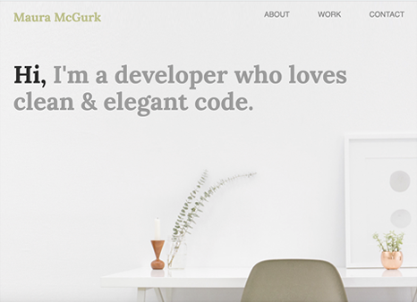
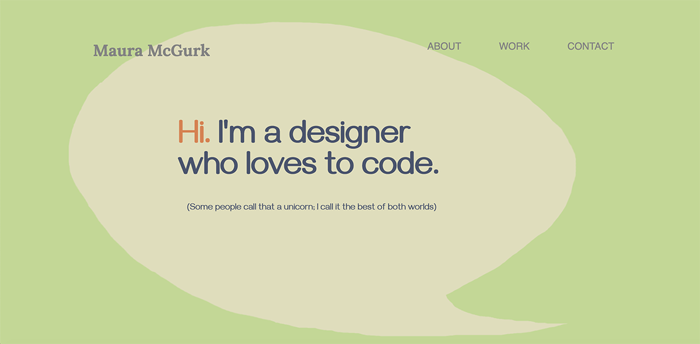

Web Design Portfolio
Case Study

The Challenge
This concept evolved from a class exercise in HTML and CSS, in which I was provided images and design comps, and asked to convert them into a web page. Here’s my original solution, which may look familiar, possibly because so many online portfolios these days seem to feature a bright, white room with a desk, a small potted succulent, and/or a cup of coffee. Although this look is really trendy right now, I must admit that it looks nothing like my real-life desk. Since we’re among friends, I’ll confide that I don’t even drink coffee…
In my work as a fine art painter, I’ve created many portfolios over the years, and it felt almost unnatural to feature work that I knew could - and did - exist all over the world in exactly the same format. For me, it was important to personalize my portfolio, and faithfully represent myself and my work.
Something else that nibbled at the back of my mind was that, to me, the image read as unecessarily impersonal, even a bit sterile. Some months later, I actually did reencounter this image in a stock photo library and felt vindicated for having changed it. True story!
The Solution
My goal was to covey a more personable and individual statement. To that end, the impossibly pristine desk had to go because, to me, it doesn’t look conducive to real work! I also wanted to go a step farther, and make the first friendly overture to website visitors, just as I often would in real life.
I responded by creating a handmade hero image. I chose the chat bubble as the main visual element because it retains a clean and simple graphic statement, yet seems personal and relatable. It also provides the conversational opener, as if I’m literally speaking with visitors, along with the introductory text (and a small unicorn joke, which I couldn’t resist).
I really believe that technology doesn’t need to feel inhuman, and I want to convey an openness and ease, in both my design and interpersonal styles.
